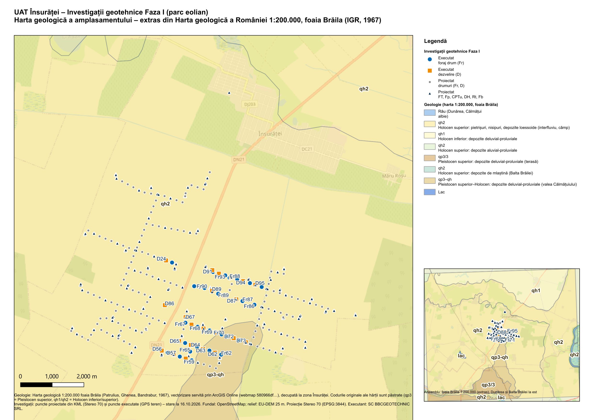

Geologia amplasamentului Însurăței
Câmpia Brăilei (Bărăganul de Nord), malul stâng al Călmățuiului, pe Platforma Moesică. Extras din Harta geologică a României 1:200.000, foaia Brăila (IGR, 1967), drapat pe relieful EU‑DEM și corelat cu cele 49 de investigații executate și cele 400 de puncte proiectate.
Harta geologică 3D interactivă
Bloc de teren de ~28 × 18 km (EU‑DEM 25 m, exagerare verticală reglabilă) cu unitățile hărții geologice pe suprafață și o coloană stratigrafică schematică pe pereți (cote absolute orientative: baza loessului ≈ +22 m, baza nisipurilor freatice ≈ +2 m, baza complexului marnos ≈ −30 m – valori regionale, de verificat prin forajele FT). Trage pentru rotire, rotița pentru zoom, click pe un foraj executat pentru fișa lui.
Harta geologică 2D
Aceleași poligoane, peste OpenStreetMap, cu punctele proiectate și cele executate. Click pe o unitate pentru descriere; click pe un punct executat deschide fișa.
Date: geologie_insuratei.geojson (WGS84, decupaj 27,30–27,85 E / 44,70–45,03 N) · sursă: Harta geologică 1:200.000 foaia Brăila (Patrulius, Ghenea, Bandrabur, 1967), vectorizare publicată ca webmap ArcGIS Online.
Planșa QGIS
Harta geologică a amplasamentului, A3, Stereo 70 (EPSG:3844), generată în QGIS din aceleași date (proiectul gis/Insuratei_geologie.qgz, script gis/build_geo.py).


Unitățile geologice de pe amplasament
Repartizarea punctelor pe unități (calcul punct‑în‑poligon pe coordonatele proiectate / GPS).
| Unitate | Descriere (harta 1:200.000) | Puncte proiectate | Executate |
|---|
Descriere geologică
1. Cadrul geografic și geomorfologic
Însurăței se află în Câmpia Brăilei („Bărăganul de Nord”), subunitate nord‑estică a Câmpiei Române delimitată de Siret, Dunăre, Călmățui și Buzău; relieful este jos și neted, cu altitudini ce scad de la ~50 m în NV la ~20 m în E[24]. Amplasamentul ocupă extremitatea sudică a Câmpului Viziru – interfluvii plate la 20–45 m, văi seci de 4–6 m adâncime – și marginea stângă a luncii Călmățuiului, lată de 2–7 km; malul stâng se ridică doar 6–7 m deasupra luncii, dar este abrupt, iar malul drept depășește 25 m[20][23]. Pe partea dreaptă a văii apar nisipuri de dune (corpul de apă ROIL09)[13]; pe câmp, crovuri (microdepresiuni de tasare‑sufozie) și movile[6][16]. Călmățuiul (152 km, bazin 1 668 km²) are debit mediu ~1,1 m³/s și se varsă în Dunăre la ~20 km în aval[14][16].
Climat temperat‑continental de stepă: 10,4–11,1 °C media anuală, precipitații sub 500 mm/an, adâncime de îngheț 0,85–0,90 m, crivăț 80–120 km/h[16][20]. Soluri: cernoziomuri (70–75 % din județ), psamosoluri în Câmpia Călmățuiului, solonceacuri în luncă între Ulmu și Însurăței[16].
2. Cadrul geologic regional
Zona aparține Platformei Moesice – fundament cristalin precambrian și cuvertură sedimentară paleozoic‑mezozoică și neogenă[18]. Însurăței se situează în blocul dintre falia Intramoesică (la SV) și falia Peceneaga–Camena (la NE, limita cu Orogenul Nord‑Dobrogean), în prelungirea Dobrogei Centrale sub Dunăre; aici depozitele Dacian–Cuaternar au ~2 km grosime, iar spre N–NV cuvertura se îngroașă rapid către Depresiunea Focșani (până la ~13 km de sedimente Badenian–Cuaternar)[7][8][9]. Forajele geotermale de la Însurăței (1982–1983) au interceptat ape de până la 60 °C între ~550 și 1 550 m, în colectoare ale cuverturii[26]; în județ, structurile petrolifere Ulmu și Jugureanu se află la 10–20 km[16].
3. Depozitele cuaternare
Succesiunea regională a Pleistocenului în Bărăgan: Stratele de Frătești (Pleistocen inferior; pietrișuri și nisipuri în trei niveluri, 50–150 m)[3][4][27], Complexul marnos / Formațiunea de Coconi (Pleistocen mediu; argile, silturi, nisipuri fine, 30–40 m)[11][27], Nisipurile de Mostiștea (Pleistocen superior; 10–30 m)[11] și, la zi, loessul și depozitele loessoide. În Câmpia Brăilei grosimea loessului scade de la ~16 m (Constantinești) la 5 m la Cuza Vodă și 3–4 m la Mircea Vodă; forajele din Câmpul Viziru au traversat 5–10 m de loess galben macroporic[5][20]. Pentru Însurăței este deci de așteptat o pătură loessoidă de 5–10 m (valorile NP 125 de 10–35 m pentru Brăila–Galați sunt regionale)[28]. Loessul local este nisipos (nisip fin 50–70 %, argilă 5–11 %), fără paleosoluri observate, atribuit ultimului stadial[5]; prin corelare cu secțiunile datate Vlasca, Balta Albă Kurgan, Mircea Vodă și Urluia, el corespunde unității L1 (~15–70 ka)[41–45].
În Holocen s‑au depus aluviunile luncii Călmățuiului (nisipuri cu intercalații argiloase), nisipurile de dune de pe dreapta văii și depozitele de mlaștină/lacustre sărăturate din crovuri[13][22]. Pe harta 1:200.000, 40 din cele 49 de investigații executate cad pe unitatea qh2 – pietrișuri, nisipuri, depozite loessoide (câmp), iar 9 (D56, D57, D62, D64, D65, Fr59, Fr62, Fr65, Fr66 – latura sudică) pe qp3–qh – depozite deluvial‑proluviale ale marginii văii.
4. Hidrogeologie
Amplasamentul este la contactul a trei corpuri de apă freatică (ANAR – ABA Buzău‑Ialomița)[12][13]: ROIL07 Câmpia Brăilei – acvifer neconfinat la baza loessului (acoperiș 5–10 m), alimentare exclusiv din precipitații (30–50 mm/an), grosime medie ~8 m, ape clorurate‑sodice de 1–5 g/l, curgere V→E; ROIL06 Lunca Călmățuiului – nisipuri aluviale, nivel 1–5 m, acvifer suprafreatic sezonier la 1–1,5 m, înmlăștinire și salinizare, stare chimică slabă; ROIL09 Călmățuiul de Sud – nisipuri de dune, nivel 2–10 m, k = 1–3 m/zi, drenaj spre Călmățui. Nivel freatic de așteptat: 3–10 m pe interfluviu, 1–5 m în luncă, cu oscilații anuale de 1–2 m, maxime în mai–iunie, influențate de irigații[16][18][20][21]. Acviferul de adâncime din Stratele de Frătești (50–200 m) este sub presiune, cu ape slab mineralizate (<0,7 g/l)[10][21][27].
5. Caracterizare geotehnică (loess / PSU)
Loessul este pământ sensibil la umezire (PSU, NP 125): coeziv, macroporic, nesaturat, cu tasări bruște la inundare; criteriu im300 ≥ 2 %, grupa A (Img < 5 cm) sau B (Img ≥ 5 cm)[28]. Valori orientative NP 125: γ 12–18 kN/m³, w 6–15 %, n 45–60 %, Eoed 5–10 MPa, φ 5–25°, c 10–30 kPa, rezistență structurală σ0 ≈ 30 kPa la Brăila–Galați, pconv 120–180 kPa[28]. Documentele locale califică loessul din Câmpul Viziru drept „foarte compresibil, sensibil la umezire – teren slab, care necesită îmbunătățire înainte de fundarea directă”[20][21]. Pentru turbine, precedentul Fântânele: radier pe incluziuni de beton și strat de transfer din loess stabilizat cu ciment[37]; pentru drumuri: stabilizare cu nisip/ciment, coloane de loess compactat[39][40]. Încadrare NP 074 așteptată pentru fundațiile turbinelor: categoria geotehnică 3 / risc major[29].
6. Seismicitate
Hazardul este dat de sursa subcrustală Vrancea (80–180 km adâncime, ~120 km de Brăila): 1940 Mw 7,7; 1977 Mw 7,4; 1986 Mw 7,1; 1990 Mw 6,9[32]. Intensitate maximă probabilă VIII MSK[19]. P100‑1/2013: pentru Brăila ag = 0,30 g, Tc = 1,0 s (IMR 225 ani); Însurăței se află la limita zonelor 0,30/0,25 g – de confirmat în Anexa A[30]. Lichefierea s‑a produs în 1977 la Făurei, iar la Ianca factorul de siguranță este sub 1 pentru T < 100 ani[35]: nisipurile saturate din luncă și dune (nivel 1–5 m) trebuie evaluate prin CPTu.
7. Hazarde geologice
- tasări și prăbușiri în loess, sufozie, crovuri – amplificate de irigații și pierderi din rețele[6][18][20];
- eroziunea malului stâng abrupt al Călmățuiului; inundații cu depășirea cotelor de apărare în 2012 și 2014[14][23];
- înmlăștinire și salinizare în luncă; ape freatice Cl‑Na de 1–5 g/l, potențial agresive pentru betoane (verificare SR EN 206)[13][17];
- viscol (clasă maximă de vulnerabilitate), secetă[16].
Coloana stratigrafică schematică
Parametri orientativi – loess (NP 125, regional)
| Parametru | Interval |
|---|---|
| Greutate volumică γ | 12–18 kN/m³ |
| Umiditate naturală w | 6–15 % |
| Porozitate n | 45–60 % |
| Limite Atterberg wL / Ip | 12–25 % / 5–20 % |
| Modul edometric Eoed 200–300 | 5 000–10 000 kPa |
| φ / c | 5–25° / 10–30 kPa |
| Rezistență structurală σ0 (Brăila–Galați) | ≈ 30 kPa |
| Criteriu PSU / grupă | im300 ≥ 2 % · A: Img < 5 cm · B: ≥ 5 cm |
| Adâncime de îngheț | 0,85–0,90 m |
Bibliografie
Surse consultate în cercetarea documentară (16.10.2026). Raportul complet: cercetare_geologie_insuratei.md.
- Patrulius D., Ghenea A., Bandrabur T. (1967) – Harta geologică a României 1:200.000, foaia Brăila, Institutul Geologic.
- geo‑spatial.org – Harta Geologică a României 1:200.000 (IGR, 1964–1968).
- IGR – Lexiconul litostratigrafic: Strate de Frătești.
- Stănoiu I. – Aspecte ale geologiei și geomorfologiei Cuaternarului din Muntenia și Oltenia.
- Canciu C. (2004) – Considerații asupra loessurilor din Câmpia Brăilei, Analele Univ. Suceava, Geografie XIII.
- Grecu F. et al. (2015) – The loess micro‑depressions within the Romanian Plain, Rev. de Geomorfologie 17.
- Tărăpoancă M. et al. (2003) – Architecture of the Focșani Depression, Tectonics 22(6).
- Matenco L. et al. (2003) – Subsidence analysis and tectonic evolution of the external Carpathian–Moesian Platform, Sed. Geol. 156.
- Săndulescu M. (2009) – The geotectonic framework of the Vrancea Seismic Zone, Proc. Rom. Acad. B.
- Palcu M. et al. (2008) – Inventarierea structurilor acvifere din sudul României, Geo‑Eco‑Marina 14 supl.
- Macaleț R. et al. (2008) – Corpurile de apă subterană din sudul României, Geo‑Eco‑Marina 14 supl.
- ANAR – ABA Buzău‑Ialomița – PM III, cap. 4 – corpuri de apă subterană.
- ANAR – ABA Buzău‑Ialomița (2022) – PMB III – Anexe vol. I (ROIL04, 06, 07, 09).
- ANAR / MMAP – PMRI ABA Buzău‑Ialomița, ciclul II.
- CJ Brăila – Geografia județului.
- CJ Brăila – Strategia de dezvoltare, Partea I – analiza socio‑economică.
- CJ Brăila – Strategia 2014‑2020, cap. 1.9 Mediu.
- Danias SRL (2012) – PUG Brăila – studiu privind factorii de mediu.
- Primăria Brăila (2023) – Actualizare PUG Brăila – memoriu general.
- Primăria Viziru – Monografia comunei.
- Primăria Chiscani – Monografia comunei.
- Primăria Unirea – Relieful și vegetația.
- Asociația „Bordeiul Verde” – Așezare.
- România date geografice – Câmpii (B).
- Wikipedia – Însurăței; Călmățui (Brăila).
- Adevărul (2014) – Zăcământul de ape geotermale din județul Brăila.
- Toping Company SRL (2022) – Studiu de fundamentare PUG Boranești – condiții geotehnice.
- MDLPL – NP 125 – Normativ privind fundarea construcțiilor pe PSU.
- Geostru – NP 074‑2022 – evaluarea riscului geotehnic.
- MDRAP – P100‑1/2013; Encipedia – harta PGA.
- MDLPA (2024) – P100‑1/2025, redactarea a II‑a.
- Lungu D., Văcăreanu R., Aldea A., Arion C. – Earthquake hazard and risk in Romania.
- Georgescu E.‑S., Pomonis A. (2012) – Vrancea earthquakes of 1940 and 1977, 15WCEE.
- Pavel F. (2018) – Frontiers in Built Environment 4:50.
- Pavel F., Vlăduț R. (2023) – Liquefaction hazard for sites in Romania, Infrastructures 8(9).
- Agerpres (2025) – Cutremurul din 10 noiembrie 1940.
- Ciortan R. – Fundarea pe loess a turbinelor din parcul eolian Fântânele, Buletinul AGIR.
- Impact Sănătate SRL (2025) – EIA Parc eolian Tudor Vladimirescu II.
- Dumitru M. et al. (2014) – Îmbunătățirea PSU prin compactare dinamică intensivă.
- Nguyen C.D., Burlacu C., Boti I. (2019) – Loessoid soils improvement, RJTI 8(1).
- Groza‑Săcaciu Ș.‑M. et al. (2020) – Mircea Vodă loess‑paleosol master section, Methods and Protocols 3(1).
- Pötter S. et al. (2019) – Last glacial loess records from the Lower Danube Basin.
- Pötter S. et al. (2020) – Lower Danube loess, EGU 2020.
- Scheidt S. et al. (2021) – Balta Alba Kurgan loess‑paleosol section, Front. Earth Sci. 8.
- Bösken J.J. (2020) – Luminescence dating in the Danube catchment, E&G QSJ 69.